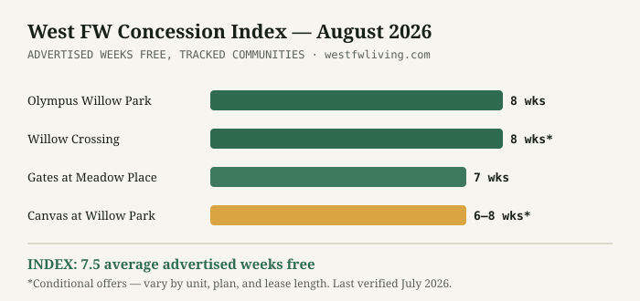
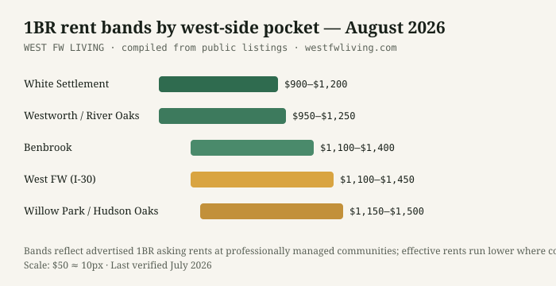

West Fort Worth Rent Report: August 2026
New: the buyer-side siblings of this report — rent-vs-buy computed with these exact rents and the Builder Incentive Index.
One in three properties is paying you to move in. The monthly data brief on rents, concessions, and leverage across the west side.
✓ Edition No. 1 — data compiled from public listings and market sources, week of August 1, 2026
The number that defines this market
Roughly one in three professionally-managed rental communities in the Fort Worth area is currently advertising a move-in concession — and in the Willow Park/Hudson Oaks pocket specifically, it's effectively all of them, at 6–8 weeks free. Metro vacancies are at their highest levels in years, downtown asking rents have slipped about 2.8% year-over-year, and the median renter now takes 41 days from search to signature. Properties are competing for you. Most renters have no idea.
West-side rent bands, August 2026
| 1BR band | Concessions | Note | |
|---|---|---|---|
| White Settlement | $900–$1,200 | Scattered | Lowest cost near the Lockheed plant; older stock |
| West FW (I-30 corridor) | $1,100–$1,450 | Common | Most inventory, most competition among properties |
| Benbrook | $1,100–$1,400 | Occasional | Thin inventory; good units move fast |
| Willow Park / Hudson Oaks | $1,150–$1,500 | 6–8 WKS FREE | The metro's hottest concession cluster — full table |
| Aledo (houses) | $1,400–$1,900 | Rare | Aledo ISD premium; a different market entirely |
Three readings of the data
For renters: August–September is peak leverage. Concessions cluster around the school-year moving wave and thin out as vacancy tightens — if your lease ends this fall, the free weeks on offer today may not exist at renewal time, which cuts both ways: shop hard now, or brace for a renewal quote that ignores all of this. For would-be buyers: concessions compress effective rents just as they're compared against a ~6.75% mortgage market — run the honest comparison on effective rent, not sticker, or the math flatters renting by $150+/month. The calculator does it correctly. For landlords and small investors: when institutional properties give away two months, private landlords competing at sticker price sit vacant — the clearing move is pricing to effective, not asking.
The West FW Concession Index
August 2026 reading: 7.5 — the average advertised weeks of free rent across the tracked west-side communities (Olympus 8, Willow Crossing 8*, Gates 7, Canvas 6–8*; asterisks mark conditional offers). The Index turns this market's defining behavior — paying tenants to move in — into one number you can watch month over month: a falling Index means the market is tightening and negotiating leverage is fading; a rising or flat Index means renters still hold the cards. Cite it freely with attribution: West FW Concession Index, West FW Living.


Sources & methodology
Rent bands and concession figures are compiled from live public listings on major listing platforms and property websites during the stated verification week, cross-checked across at least two sources per community. Market-level indicators (vacancy direction, days-to-lease) draw on published market data for the Fort Worth area. Broader context on rental trends is available from the U.S. Census Housing Vacancy Survey and HUD Fair Market Rent data for Tarrant and Parker counties. Point-in-time figures change without notice; the “last verified” date governs.
About this report
The West Fort Worth Rent Report is compiled monthly by West FW Living from public listing data and market sources, focused exclusively on Fort Worth's west side and eastern Parker County. Figures are point-in-time and verified the week of publication. Journalists and researchers: this data is free to cite with attribution and a link. Questions or corrections: leads@anastasiaweaver.com. Next edition: September 2026.